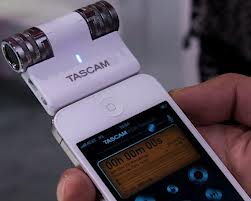
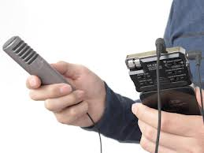
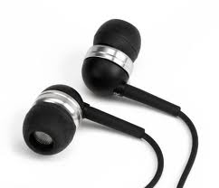
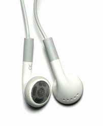
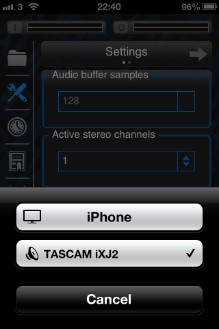

Audio Connectivity
Stereo input peripherals
Aud1’s real potential can be unlocked when it is used in conjunction with a stereo input device. This gives the listener a sense of space within the environment in which they listen, as well as providing all of the benefits associated with binaural listening. Aud1 features a stereo linkage technology that is enabled in the background when a stereo input device is used. This linkage technology modulates the action of the compressors within each band to preserve spatial cues.
Aud1 is compatible with any stereo input device designed for iOS. These devices come in 2 main forms:
|  | Devices with built-in microphones. |
|  | Devices allowing connection of external stereo microphones. |
The best possible hardware combination is still an open research question, so please don’t hesitate to contact Nick Clark describing any experiences with various hardware combinations.
Headphones advice
Connect the headphones to the device then use either the hardware volume buttons on the side of the device, or the software volume control in the app to adjust the headphone volume. Hint: For best results, use headphones with a good seal, preferably with an occluded fitting (i.e. blocks the ear canal).
|  | Headphones the form an acoustic seal in the ear canal allow Aud1 to protect the user from loud sounds. |
|  | Headphones that do not form an acoustic seal cannot protect the wearer from loud sounds, but will still allow amplification of quiet sounds. |
Bluetooth
Bluetooth support was one of the most requested features for the original BioAid app. Therefore, as a result of popular demand, I have added basic bluetooth support to Aud1. HOWEVER!!! Bluetooth headset technology is designed for telephony, and is not designed for fast real-time full-duplex operation. When using a headset designed for telephony with Aud1, a processing delay is introduced, which is not a problem when conducting a telephone conversation, as the other person will be remote. Furthermore, the audio bandwidth is severely reduced, which again is not a problem over a low frequency-bandwidth voice call line. Unfortunately, these Bluetooth limitations are clearly noticeable when using the app, and generally impede any benefit that would otherwise be given to the listener by the app. Still, I have included the ability for the user to experiment with his or her own hardware. Feedback from the original BioAid project revealed some novel uses of the app which I had not foreseen, so Bluetooth support is included for experimentation purposes in Aud1. Please try it out if you currently own Bluetooth hardware, but I would not recommend purchasing any Bluetooth hardware specifically for use with Aud1. I kindly request that you do not review the software poorly online due to Bluetooth technology limitations that are out of my control. However please don’t hesitate to contact Nick Clark personally regarding any successes or failures with your Bluetooth devices.
To use a Bluetooth enabled device in Aud1, first pair your devices and then open Aud1. When Aud1 is in its paused state, you should be presented with an audio route control icon in the bottom right corner of the app screen. Tap this and you’ll be able to select your audio peripherals.
